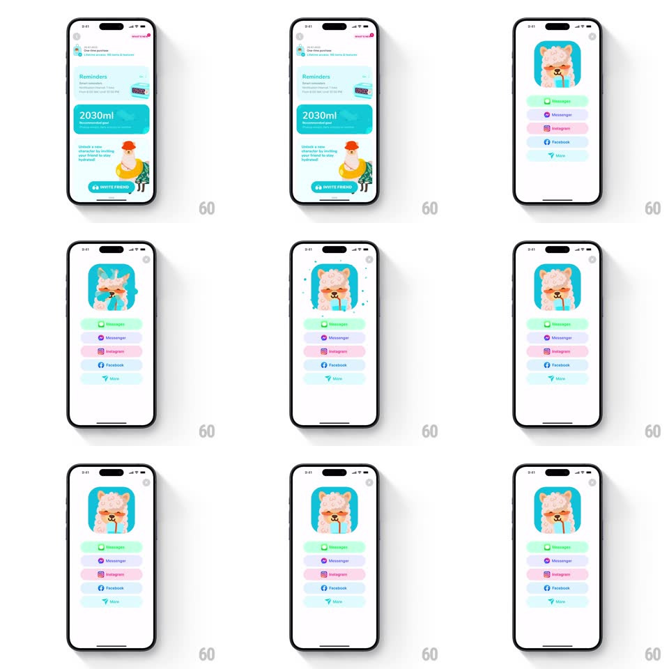

Media
Frame-by-frame

Rebuild this interaction 1:1: Waterllama's invite sheet - a bottom sheet slides up with the mascot in a teal frame, a confetti burst pops behind it, and the share buttons stagger in one by one.

Rebuild this interaction 1:1: Waterllama's invite sheet - a bottom sheet slides up with the mascot in a teal frame, a confetti burst pops behind it, and the share buttons stagger in one by one. ## Integration Integration: stack-agnostic spec - springs given as stiffness/damping, timed motions as duration + curve; map every value to your framework and animation library of choice. ## Scene Behind: the settings screen (Reminders card, 2030ml goal card, "Unlock a new character" copy with an INVITE FRIENDS pill). The sheet: a white rounded panel with the llama's head inside a rounded teal frame at top, then five pastel share rows - iMessage (mint), Messenger (lavender), Instagram (pink), Facebook (sky), More (pale teal). ## Motion spec Pattern: sheet entrance + confetti burst + staggered buttons. - Tap INVITE FRIENDS: the backdrop dims (black to 30%, 200ms) and the sheet slides up (spring ~360/28, 350ms, no overshoot past its resting offset). - As the sheet lands, the mascot frame pops (scale 0.8 to 1, spring ~420/20) and a single confetti burst erupts from BEHIND the frame - 24-30 pieces radiating outward (260deg fan, gravity pulling them down, 900ms lifetime), partially occluded by the frame so it reads as depth. - The share rows stagger in bottom-up: each row slides (translateY 18px) and fades (220ms, 60ms apart) after the mascot lands, icons scaling in with a tiny pop (spring ~460/24). - Row press: the row highlights (background deepens one step, instant) and its icon hops (translateY -4px and back, 200ms) before the system share flow takes over. - Dismiss: drag down (sheet tracks finger, rubber-band at top) or tap backdrop; sheet slides out (spring ~380/30), confetti pieces finish their fall and are gone. ## Calibration - The burst is ONE pop, not a loop - restraint keeps it charming. - The mascot is cropped at the neck inside its frame; keep the crop tight and centered. ## Reduced motion Sheet fades; confetti burst omitted; rows appear together. ## Don't miss - The confetti spawns behind the frame, not over the whole sheet - occlusion is what sells it. - Rows are pill-shaped pastels with left icons; no chevrons, no separators.